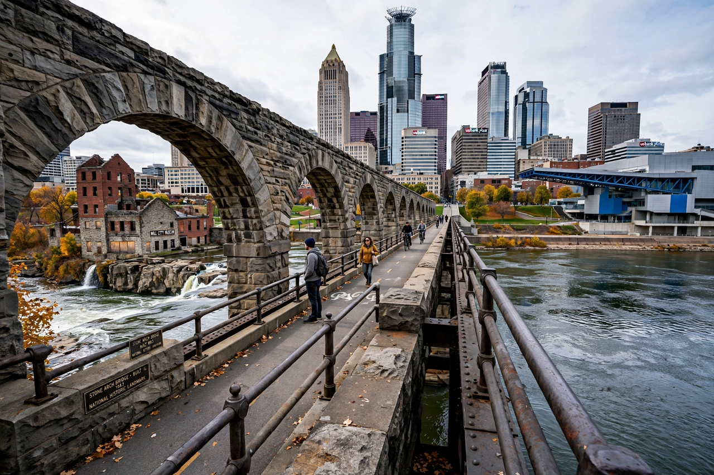

Minneapolis
From Wikipedia, the free encyclopedia

Minneapolis is the largest city in Minnesota (population about 430,000), forming the 'Twin Cities' with the state capital, Saint Paul, across the Mississippi River. Built on flour milling (the Washburn and Pillsbury mills made it the world's flour capital), it is now a corporate and cultural centre — headquarters area for Target, a major medical hub, the home of Prince, and the city where George Floyd's murder in 2020 ignited worldwide protests.
History
St Anthony Falls — the Mississippi's only natural waterfall — powered sawmills then flour mills; the Washburn 'A' Mill explosion (1878) and rebuilding made Minneapolis milling supreme until the 1930s. A Scandinavian-settled, reform-politics city (Hubert Humphrey began as its mayor), it pioneered open housing fights and, later, became a centre of Somali-American life (the largest Somali diaspora community in the US).
Modern city
The Twin Cities metro (3.7 million) posts high education and employment (3M, Medtronic, UnitedHealth, Best Buy and General Mills ring the suburbs) and a famed park system built on its chain of lakes. The murder of George Floyd by a Minneapolis police officer on 25 May 2020 — filmed, and sparking the largest protest wave in US history — made the city's name a global shorthand, and its policing and reform politics a continuing story.